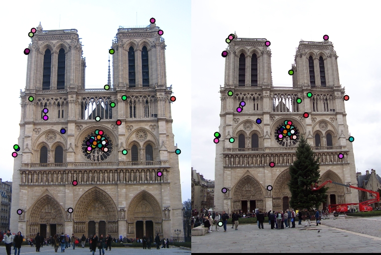
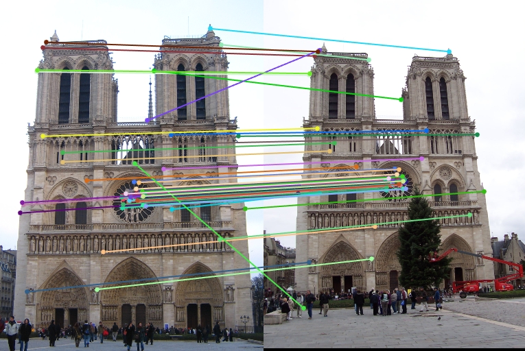
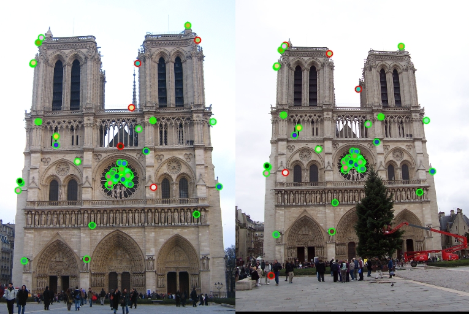
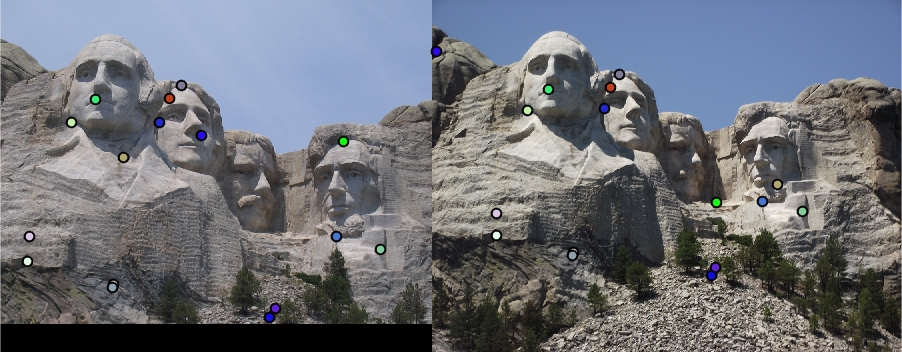
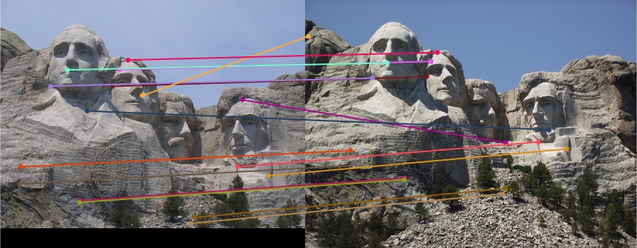
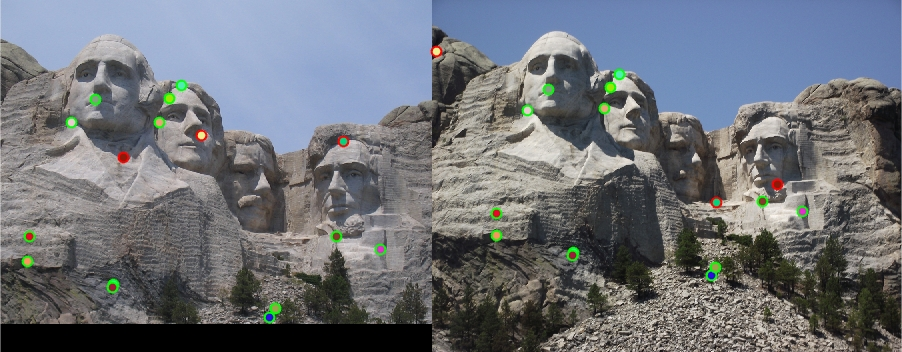
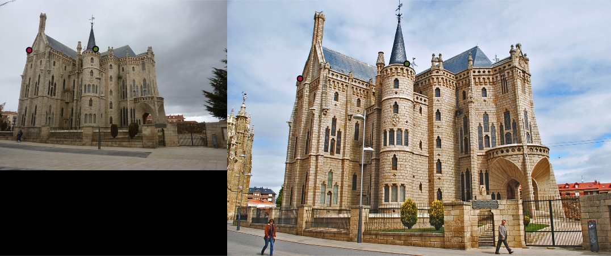
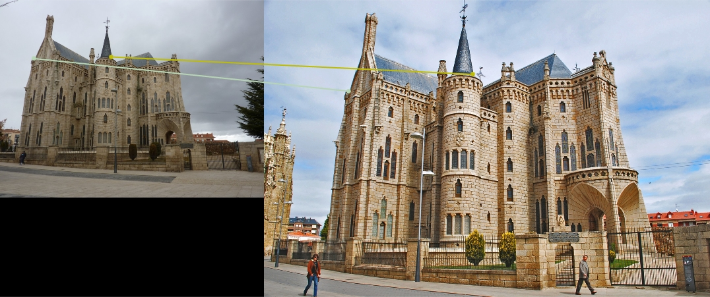

I implement the baseline feature matching algorithm for this project. This gives me relatively good performance and the implementation is listed below. It can be divided into three main parts, namely, interest point detection, feature description and feature matching.
I implemented a simple Harris corner detector. The Matlab code for this algorithm is relatively straightforward. I use the equation in the lecture materials and Szeliski 4.1.1 to create a response matrix, which represents the likelihood of each point being the corner. I simply cut off the region that is close to the boundary to avoid the problem of exceeding the index in the following step. The number of corner points to capture in this step is set to be 1000. This is relatively large so that more pair of points would be compared, which will somehow improve the performance of this algorithm.
function [x, y, confidence, scale, orientation] = get_interest_points(image, feature_width)
G=fspecial('gauss',[3, 3], 0.5);
[Gx,Gy] = gradient(G);
gx = imfilter(image,Gx);
gy = imfilter(image,Gy);
gxx = imfilter(gx,Gx);
gxy = imfilter(gy,Gx);
gyy = imfilter(gy,Gy);
G = fspecial('gaussian',[16 16],2);
Ixx = imfilter(gxx,G);
Ixy = imfilter(gxy,G);
Iyy = imfilter(gyy,G);
Response = (Ixx.*Iyy)-Ixy.^2-0.06.*(Ixx+Iyy).^2;
% Suppress the edge points by assign zero to them in Response matrix.
Response(1 : 10, :) = 0;
Response(end - 10 : end, :) = 0;
Response(:, 1 : 10) = 0;
Response(:, end - 10 : end) = 0;
% choose the largest 1000 response points as keypoints.
index = imregionalmax(Response);
sorted_resp = sort(Response(index),'descend');
pointnum = 1000;
top_resp = sorted_resp(1:pointnum);
x=[];y=[];
[height,width] = size(image);
for i = 1:pointnum
[row,col]=find(Response==top_resp(i));
x=[x; col];
y=[y; row];
end
end
I implemented the baseline SIFT-like feature descriptors as described in the comment of the function stencil. I first obtain a 16 by 16 block matrix around each keypoint and compute the gradient magnitude and direction for each window. The magnitude matrix will be weighted using a gaussian filter the same size as the matrix itself. Then I divide the block into 16 cells of size 4 x 4. The magnitude of each point in each cell will be sum up in a bin according to their orientation. Finally, I append each cell's bin to form the 1 x 128 feature descriptor vector. Based on Szeliski 4.1.2, some normalization work is done in order to make the data easy to process in the following step. The Matlab code is as below.
function [features] = get_features(image, x, y, feature_width)
features = zeros(size(x,1), 128);
for i = 1:size(x,1)
feature = zeros(1,128);
block = image(y(i)-7:y(i)+8,x(i)-7:x(i)+8);
[Gmag, Gdir] = imgradient(block);
gaussian_filter = fspecial('gauss',[16,16], 4);
weighted_Gmag = Gmag.*gaussian_filter;
dvd_mag = mat2cell(weighted_Gmag,4*ones(1,4),4*ones(1,4));
dvd_ori = mat2cell(Gdir,4*ones(1,4),4*ones(1,4));
for row = 1:4
for col = 1:4
for m = 1:4
for n = 1:4
bin = ceil((dvd_ori{row,col}(m,n)+180)/45);
if bin == 0
bin = 1;
end
feature(((row-1)*4+col-1)*8+bin) = feature(((row-1)*4+col-1)*8+bin) + dvd_mag{row,col}(m,n);
end
end
end
end
% normalize the feature, clip them to 0.2 and then normalize again.
feature = feature ./ norm(feature);
feature(feature(:)>0.2) = 0.2;
feature = feature ./ norm(feature);
features(i,:) = feature;
end
end
I calculate the euclidian distance between each pair of features, then sorted each column of the the resulting matrix to obtain the nearest and second nearest neighbors for each feature. After computing the ratio of the distances from these two neighbors, I rejected all matches in which it was greater than 0.7.
function [matches, confidences] = match_features(features1, features2)
num_features1 = size(features1, 1);
num_features2 = size(features2, 1);
matches = [];
confidences = [];
distances = zeros(num_features2, num_features1);
for i = 1:num_features1
for j = 1:num_features2
distances(j,i) = norm(features1(i,:)-features2(j,:));
end
end
[sorted_dist, idx] = sort(distances);
for i = 1:num_features1
ratio = sorted_dist(1,i) / sorted_dist(2,i);
if ratio < 0.7
matches(end+1,:) = [i,idx(1,i)];
confidences(end+1) = 1-ratio;
end
end
[confidences, idx] = sort(confidences, 'descend');
matches = matches(idx, :);
end
For the Notre Dame test images, 53 of my 58 pairings correctly matched.
|  |
|  |
|  |
For the Mount Rushmore test images, 13 of my 16 pairings correctly matched.
|  |
|  |
|  |
For the Episcopal Gaudi test images, 2 of my 2 pairings correctly matched.
|  |
|  |
I stick almost entirely to the baseline implementation. It did a good job of matching local features for the initial test images, except for the Episcopal Gaudi one, in which too few points are matched. Other images in the extra data set are more tricky to match, and my lack of accounting for scale or orientation definitely decrease my algorithm's performance. Below are the results of matching features in two other sets of images:
They both have some correct matches, but are not as good as the performance I was able to obtain for the Notre Dame. This is largely due to the variant of the viewing angle, illumination and scale of the picture.